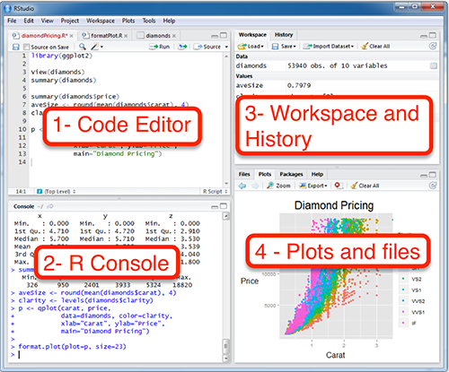
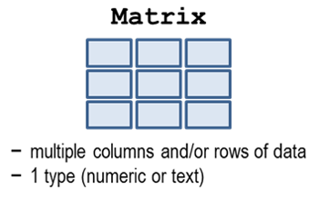
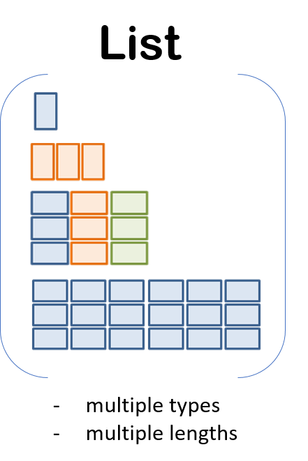

Week1-1
Hello!

We aren’t computer scientists and that’s okay!
We make lots of mistakes. Mistakes are funny. You can laugh with us.
Let’s go, Simba, Pumbaa, and Timon!
1 Overview of R
1.1 What’s R?
R is a programming language developed by Ross Ihaka and Robert Gentleman in the Department of Statistics at the University of Auckland, New Zealand.
R has comprehensive statistical analysis packages. It is open-source, free, and dynamic software environment. It has been used for data analysis, data manipulation, calculation, and graphical display.
Pros:
R’s biggest advantage is the vast array of packages, over 10,000 packages and the number is growing. Unmatched quality plotting and graphing.
Cons:
Memory management, speed, and security.
1.2 Who uses R

1.3 When we use R
• To connect to databases
• To read/download data from websites
• To document and share methods
• When data will have frequent updates
• When we want to improve a process over time
2 RStudio - A Grand Tour
RStudio is the integrated development environment (IDE) for R

2.1 Customize R studio
Let’s add a little style so R Studio feels like home. Follow these steps to change the font-size and color scheme:
- Go to Tools on the top navigation bar.
- Choose Global Options…
- Choose Appearance with the paint bucket.
- Increase the Editor Font size
- Pick an Editor theme you like. The default is Textmate if you want to go back

2.2 Make a R project
Step 1: Start a new project
In Rstudio select File from the top menu bar
Choose New Project…
Choose New Directory
Choose New Project
Enter a project name such as “training”
Select Browse… and choose a folder where you normally perform your work
Click Create Project
In the Plots and files panel, click Files, then New Folder to create subfolders, e.g. input, script, output, etc.
Step 2: Open a new script
File > New File > R Script
Click the floppy disk save icon
Give it a name: Simba.R or session1_training.R will work well
Exercise 1
Create a R project
3 R coding basics
3.1 Create an object
All R statements where you create objects have the same form:
You can create new objects using the “left arrow” <-. It’s typed with a less-than sign < followed by a hyphen -. It’s more officially known as the assignment operator.
RStudio’s keyboard shortcut: Alt + - (the minus sign)
3.2 Name an object
Object names must start with a letter, and can only contain letters, numbers, _ and .
Exercise 2
What happens when you add these to your R script?
To run a line of code in your script, click the cursor anywhere on that line and press CTRL+ENTER
3.3 Calling functions
R has a large collection of built-in functions that are called like this:
For example:
using sum() to take summation of all numbers in its arguments
To get the help of a function, type ?function_name or search from the ‘Plots and files’ Panel
Exercise 3
Use function seq() to create a sequence of numbers from 0 to 20 with increment 5.
3.4 Basic data types
Four common data types:
integer: numbers that do not contain decimal values, 2L
as.integer(), integer(), is.integer()
double or numeric: numbers with decimal values, 2.0, 5.2
as.double(), double(), is.double()
character or string: alphabets or numbers enclosed by quotes, “hello”, “a”
as.character(), character(), is.character()
logical: a variable that can have a value of TRUE/T and FALSE/F
as.logical(), logical(), is.logical
R provides several functions to examine the type of objects, for example
• class()
• typeof()
• str()
3.5 Data structure
Commonly used data structures in R:
• vector
• data frame
• list
• matrix
3.5.1 Vector
Vector is the simplest type of data structure in R. It is a sequence of data elements of the same basic type.
Create a vector using function c(): place the elements seperated by a comma between parentheses.
conc <- c(80, 40, 8) # numeric vector (use hash sign to add comments)
conc
is.vector(conc) # check if conc is a vector
length(conc) # print the length of conc
str(conc) # display overall info of conc
View(conc) # invoke a spreadsheet-style data viewer
pollutants <- c("ozone", "no2", "pm2.5") # character vectorExercise 4
Create a logical vector with elements of TRUE, FALSE, FALSE and check its info
3.5.2 Data frame
A table in R is known as a data frame. We can think of it as a group of columns, where each column is made from a vector. Data frames in R have columns of data that are all the same length.
Let’s make a data frame with two columns using data.frame():
#create a table with two columns: item & value
monitor_df <- data.frame(pollutant = pollutants,
design_value = conc)
# print the monitor_df data frame to the console
monitor_dfView your data frame using: View()
Use the $ sign after the name of your table to see the values in a column
Exercise 5
Add a third column (above_naaqs) to monitor_df using the logical vector created in Exercise 4. View your data frame using str() and View()
3.5.3 Matrix

A matrix is two-dimensional data with same types
3.5.4 List

A list is a combination of elements with different types and lengths.
4 Recap
creating an R project
basic data types
basic data structures